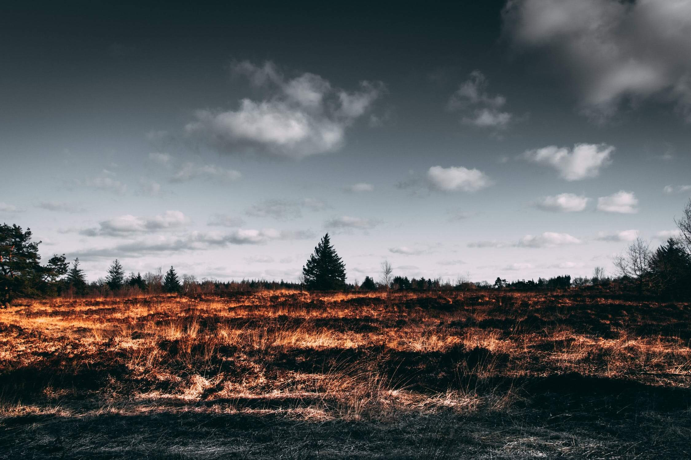
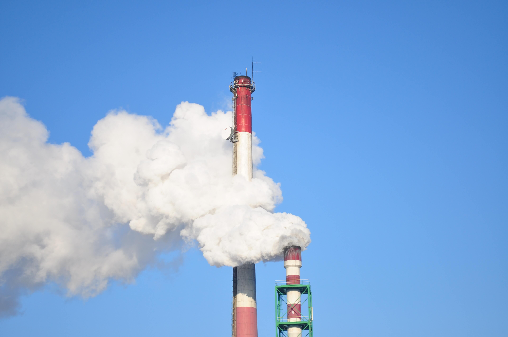
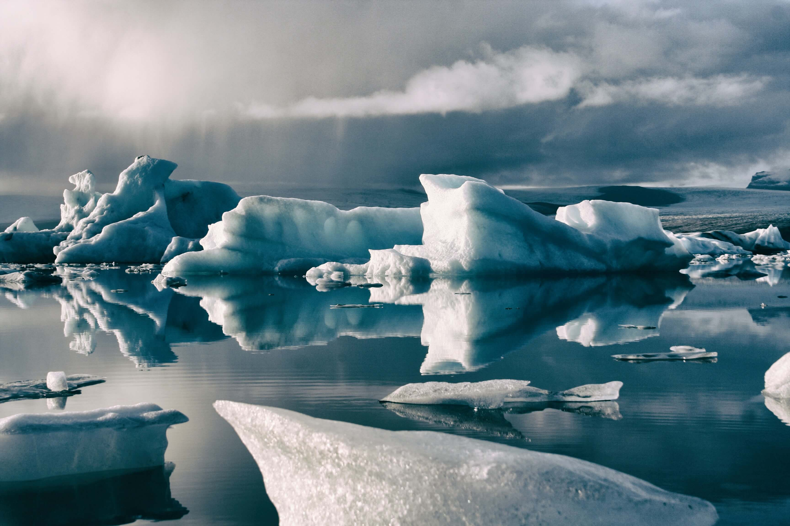

La deforestazione
La deforestazione rappresenta uno dei problemi più gravi del nostro pianeta. Con il termine deforestazione, o disboscamento, si intende l’abbattimento di alberi per motivi commerciali o per ottenere nuovi terreni da destinare all’agricoltura e all’espansione urbana. Quando il taglio degli alberi eccede il loro tasso di ricrescita, gli alberi si riducono e si parla di deforestazione. Col passare del tempo si riducono anche gli effetti positivi apportati dalle piante all'intero ecosistema. Si tratta di un processo che ha portato allo sfruttamento intensivo di tutte le aree verdi naturali presenti nel mondo. Considerati gli effetti devastanti di questo fenomeno, i Paesi Sviluppati stanno cercando di mettere in atto una serie di misure di rimboschimento, anche se purtroppo questo non risolve le conseguenze della deforestazione in termini di perdita della biodiversità.

Le cause principali

- La necessità di nuove aree coltivabili: nei Paesi in via di sviluppo, la deforestazione è la diretta conseguenza della necessità di creare nuove terre da destinare alle colture; buona parte della popolazione mondiale vive ancora con un’economia di sussistenza, quindi ne ha effettivamente bisogno. Il problema è che tali terreni vengono poi acquistati dagli speculatori, che li destinano allo sfruttamento edilizio o minerario.
- La necessità del legname come combustibile: il legname rimane ancora la materia prima per eccellenza come combustibile; un terzo della popolazione mondiale necessità del legno per poter riscaldare le proprie abitazioni.
- La domanda di legno pregiato che accresce il taglio degli alberi delle foreste equatoriali e tropicale.
Le conseguenze principali

- Intensificarsi dell’effetto serra: le piante e gli alberi, mediante il processo di fotosintesi clorofilliana, trasformano l’anidride carbonica presente nell’atmosfera in ossigeno: il disboscamento quindi determina un aumento di CO2 e di conseguenza un acuirsi dell’effetto serra e del surriscaldamento globale.
- Cambiamenti climatici e rischio idrogeologico: il disboscamento determina cambiamenti nel clima (anche delle singole regioni) e aumenta il dissesto idrogeologico; questo significa che il rischio di frane, alluvioni e smottamenti è sempre più elevato.
- Minore biodiversità: abbattendo le foreste, numerose specie animali e vegetali rischiano l’estinzione definitiva e anche da questo punto di vista i mutamenti sul nostro ecosistema sono notevoli.
Ecco quanti alberi sono stati tagliati mentre leggevi questa pagina
Clicca qui sopra